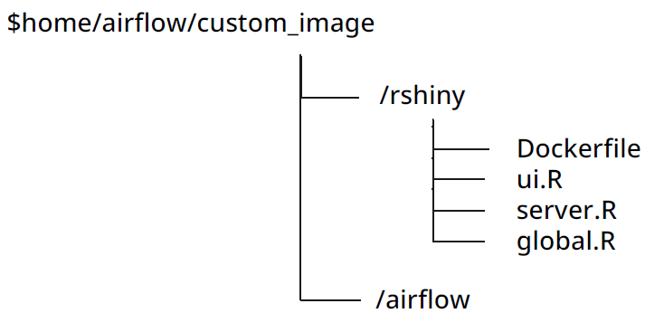
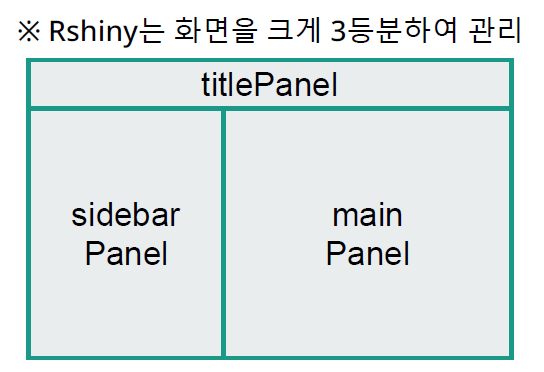

Template Variabler
DAG Creation, Bash Operator, Task Performance Subject,
Engineering
template
Author
Kwangmin Kim
Published
May 1, 2023
- R로 대화형 웹을 만들 수 있게 해주는 R의 라이브러리 중 하나
- 웹을 띄우기 위해선 세 가지 파일을 작성해야 함.
- ui.R: 화면에 보여지는 UI에 대한 내용 (UI layout 정의)
- server.R : ui.R 에서 입력을 받아 처리한 데이터를 ui.R 로 내보내는 내용. (데이터 처리 logic 정의)
- global.R: shiny에서 사용되는 전역 객체를 정의. 주로 라이브러리 임포트 등 수행. ui.R, server.R 에서 모두 사용됨
- docker-compose.yaml 파일 수정하기
sudo docker compose up실행하면 rocker/shiny-verse:latest 이미지 자동으로 다운 받음Docker compose 재기동 후 localhost:3838 접속
- Rshiny로 웹을 띄우기 위해선 세 가지 파일을 작성해야 함.
- ui.R : 화면에 보여지는 UI에 대한 내용
- server.R : ui.R 에서 입력을 받아 처리한 데이터를 ui.R 로 내보내는 내용
- global.R : shiny에서 사용되는 전역 객체를 정의. 주로 라이브러리 임포트 등 수행. ui.R, server.R 에서 모두 사용됨
- 3가지 파일 작성 후 Rshiny 도커 이미지 Customizing 필요
- 디렉토리 구조 및 파일 위치
- $home/airflow/custom_image 
- global.R 작성
- ui.R 작성
- server.R 작성
- selected_data 는 ui.R에서 사용자에 의해 입력 받은 data를 처리한 결과값이 할당된 변수
- output\(daily_confirmed 은 server.R에서 ui.R로 데이터를 다시 내보내는 역할을 함 * daily_confirmed 는 객체의 id * output\)daily_confirmed: renderPlot의 처리 결과를 daily_confirmed에 보내는 과정 ## Custom 도커 이미지 만들기
- docker compose.yaml 파일 수정하고 서비스 up
- 무엇을 만들것인가
- 현재는 서울시 공공데이터 API 를 통해 CSV 로 저장하는 오퍼레이터만 존재
- PostgresQL 데이터베이스로 바로 Insert 하는 오퍼레이터가 있다면
- 오퍼레이터 개발 목표
- 서울시 공공데이터 API 조회 후 데이터를 Postgres DB 로 바로 저장하는 오퍼레이 터
1 R shiny Container 올리기
1.1 R shiny
1.2 R shiny 컨테이너 올리기
services:
rshiny_custom: # custom image 다른 이름 붙여도 상관없음
image: rocker/shiny-verse:latest
networks:
network_custom:
ipv4_address: 172.28.0.2
ports:
- 3838:38382 R shiny Components
2.1 Rshiny 구성
if (!require(shiny)) {install.packages("shiny"); library(shiny)}
# DBI 와 glue는 DB에서 data 추출시에 사용하는 library
if (!require(DBI)) {install.packages("DBI"); library(DBI)}
if (!require(glue)) {install.packages("glue"); library(glue)}
if (!require(ggplot2)) {install.packages("ggplot2"); library(ggplot2)}
source("./ui.R", local = TRUE)
source("./server.R", local = TRUE)
shinyApp(ui, server)ui <- fluidPage(
tags$h1("corona19"),
sidebarPanel(
# dateRangeInput: date 구간을 from/to 형식(form)으로 입력할 수 있는 형태
dateRangeInput("dates", # 형식(form) id 값
"Date range", # 형식이 화면에 표시되는 이름
start = as.Date("2023-01-01"), # 화면에 기본적으로 보여질 날짜
end = Sys.Date()),
br(),
br()
),
# form을 여러개 나열하고 싶으면 sidebarPanel() 어러개 넣으면 됨
# mainPanel 역시 집어 넣을 수 있는 객체 (형식 또는 form)가 정해져 있음
# 대표적으로 자주 사용되는 객체: plotOUtput,imageOutput, tableOutput 등
mainPanel(plotOutput("daily_confirmed"), plotOutput("total_confirmed"))
# daily_confirmed: 1번째 plotOutput의 id
# total_confirmed: 2번째 plotOutput의 id
)
server <- function(input, output){ # 무조건 오는 내용
selected_data <- reactive({
# Connect to the DB
conn <- dbConnect(
RPostgres::Postgres(),
dbname = "kmkim",
host = "172.28.0.3",
port = "5432",
user = "kmkim",
password = "kmkim"
)
# Get the data
corona <- dbGetQuery(conn, glue("SELECT
to_date(substring(\"S_DT\",1,10),'YYYY.MM.DD') as s_dt
,\"N_HJ\"::float as n_hj
,\"T_HJ\" as t_hj
FROM \"TbCorona19CountStatus_bulk2\"
WHERE to_date(substring(\"S_DT\",1,10),'YYYY.MM.DD') BETWEEN '{format(input$dates[1])}' AND '{format(input$dates[2])}'"))
# Disconnect from the DB
dbDisconnect(conn)
# Convert to data.frame
data.frame(corona)
})
output$daily_confirmed <- renderPlot({
ggplot(data=selected_data(), aes(x=s_dt, y=n_hj)) +
geom_line(color='blue', linewidth = 1) +
geom_point(color='red') +
geom_smooth(method='lm') +
ggtitle("Daily confirmed cases") +
labs(x='Date',y='Daily confirmed cases')
})
output$total_confirmed <- renderPlot({
ggplot(data=selected_data(), aes(x=s_dt, y=t_hj)) +
geom_line(color='blue', linewidth = 1) +
geom_point(color='red') +
geom_smooth(method='lm') +
ggtitle("Total confirmed cases") +
labs(x='Date',y='Total confirmed cases')
})
}FROM rocker/shiny-verse:latest
COPY . /
WORKDIR /
EXPOSE 3838
CMD R -e 'shiny::runApp("global.R", port=3838, host="0.0.0.0")'